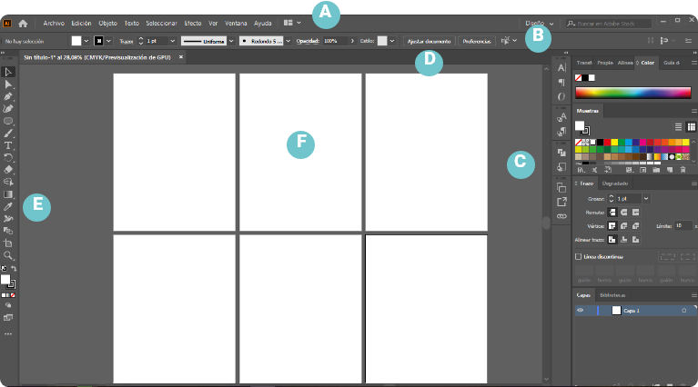
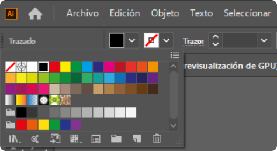
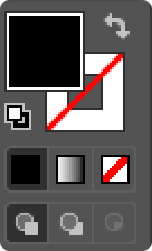
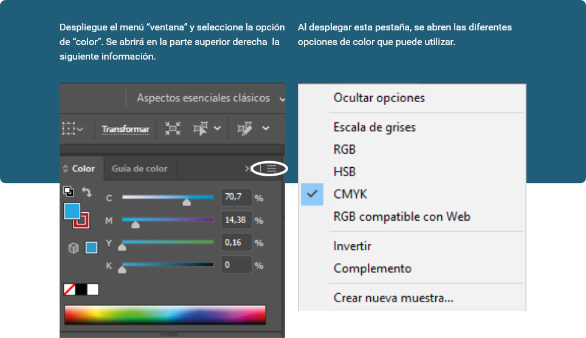
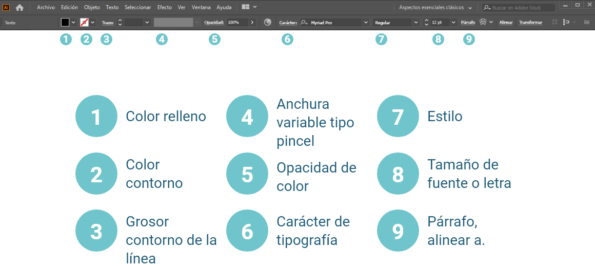
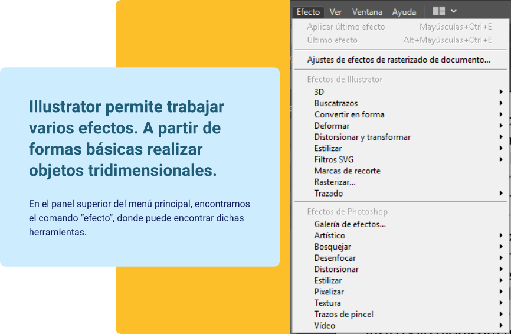
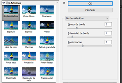
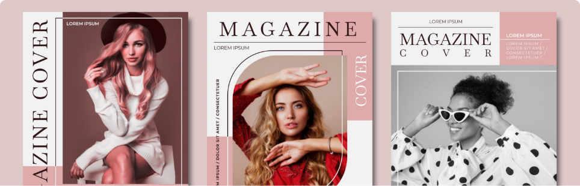

Introducción
¡Bienvenidos!
El manejo de la imagen como medio de comunicación, presenta muchos retos y responsabilidades, especialmente cuando el profesional se enfrenta al complejo trabajo y desarrollo de dar a conocer por medio de sus ideas, una marca o producto, que entrará a competir por ocupar un lugar en la mente de los consumidores respecto al resto de sus competidores. El cliente de este momento es una persona proactiva, con ideas claras, con una percepción única de la imagen, educada a lo largo del tiempo por este bombardeo constante de todos los medios de comunicación. Así se hace necesario que el diseñador, posea herramientas conceptuales, tecnológicas y actitudinales, en el ejercicio de su oficio.
Para interpretar una marca, es importante tener en cuenta por ejemplo, que no solo podemos basar el diseño de las piezas gráficas en los elementos tangibles que a la vista son claros y perceptibles para la gran mayoría de las personas, sino que detrás de esta, hay un cumulo de valores, sentimientos, ideales, esfuerzos que pesan mucho más que lo evidente, así el ejercicio del diseñador, será el de interpretar y mejorar esta información, para dar a conocer al mundo la mejor versión de dicha marca.
1. Producción gráfica
La producción gráfica es el proceso mediante el cual se lleva a cabo la creación e implementación de diversas piezas a nivel visual.
A través del uso y manejo de herramientas tecnológicas, pasando por numerosas fases que van desde el proceso de investigación y creación, hasta llegar a los medios impresos como libros, revistas, catálogos, carteles, folletos, periódicos y demás. Su funcionalidad como medio de difusión en el ámbito de las artes gráficas, el diseño y la publicidad, es el de dar a conocer de manera eficaz y asertiva una marca, un producto o un servicio, haciendo que se destaque sus principalmente características y bondades, para llevarlo a ser conocido y competitivo en el mercado.
1.1. Software vectorial
Un software vectorial es aquel que permite la creación y edición de gráficos por medio de vectores, líneas que se pueden, modificar para crear dibujos, ilustraciones, logotipos, tipografías y demás.
Ejemplos
Para una mejor comprensión es importante definir qué es una imagen vectorial y qué es una imagen de mapas de bits, sus diferencias, manejos y usos.
Imagen vectorial
Una imagen vectorial es aquella realizada por medio de vectores, objetos definidos a partir de puntos unidos por líneas que forman figuras geométricas, para realizar dibujos, ilustraciones, logotipos, etc.
Imagen mapa
de bits
La imagen de mapa de bits es una imagen conformada por pequeños puntos de color llamados píxeles, cada uno contiene un color y ciertas características. A mayor cantidad de puntos se obtiene una mayor resolución y a menor cantidad de estos una baja en la calidad de imagen. Estas imágenes son las que generalmente conocemos como fotografías y están representadas por dos números que simbolizan la cantidad de puntos a lo largo y ancho, por ejemplo 1280 x 720.
A continuación, se presenta un cuadro comparativo para imagen vectorial e imagen mapa de bits.
Es una imagen realizada por medio de vectores.
La imagen vectorial no depende de la resolución, su calidad siempre se mantiene.
La imagen vectorial se puede agrandar o contraer y no pierde calidad.
Las imágenes vectoriales ocupan muy poco espacio.
Son imágenes destinadas a la representación gráfica de elementos.
Mantienen su calidad y aspecto.
Generalmente se utilizan programas como CorelDraw o Illustrator, ya que son programas para dibujar y no para retocar.
En Illustrator, se pueden realizar piezas como carteles, logotipos, dibujos, ilustraciones, aplicaciones, papelería, bocetos etc.
Su captura se hace por medios tecnológicos como cámaras fotográficas, video y celulares.
Dependen de la resolución.
La calidad de la imagen fotográfica depende del número de píxeles por la cual este compuesta, por esto perderá calidad si aumentamos o disminuimos su tamaño, en proporciones fuera de su rango.
A mayor resolución, mayor peso.
Su ventaja principal, es el realismo con el cual se ve la imagen.
Van perdiendo calidad cada vez que se guardan o modifican.
Se utiliza Photoshop, ya que buscamos retocar la imagen para un mejor resultado.
En Photoshop se retocan imágenes para restaurar, modificar o cambiar la apariencia. De igual manera es posible realizar piezas publicitarias.
1.1.1. Interfaz y área de trabajo
Illustrator, es un programa informático utilizado en la creación y edición de imágenes vectoriales.
Constituye una herramienta para el trabajo profesional del diseñador; hace parte de las tecnológicas distribuidas por Adobe Systems. A continuación, se relacionan los pasos necesarios para utilizar esta aplicación:
Para empezar a trabajar en Illustrator, abra el programa en su equipo; estando en el programa, vaya a la parte superior izquierda, despliegue el comando Archivo, y seleccione Nuevo, para abrir un documento.
Al dar clic en Nuevo, se abre el siguiente recuadro en donde dará las instrucciones para configurar el documento, como el tamaño, la cantidad de mesas de trabajo o espacio que se van a utilizar, el nombre entre otros.
Nombre: dele un nombre a su documento.
Perfil: el perfil hace referencia al modo de salida del trabajo, si es para imprimir, para la web, una aplicación, etc. generalmente se selecciona para imprimir.
Número de mesas de trabajo: refiere a la cantidad de mesas de trabajo que vamos a utilizar (áreas para preparar los diseños).
Espaciado: espacio entre caracteres
Columnas: número de columnas, esto en caso de ser utilizadas.
Sangrado: seleccione el sangrado a utilizar en los 4 costados, si es necesario. Finalmente haga clic en “OK,” para comenzar a trabajar.
Área de recorte: es el tamaño del formato a utilizar, carta, legal, tabloide, etc.
Anchura y altura: en caso de querer utilizar un formato de tamaño diferente a los que se presentan en el icono anterior, puede de manera manual introducir las medidas del formato en el cual desea trabajar.
Unidades: aquí el programa nos da la opción de seleccionar diferentes unidades de medida como milímetros, centímetros, picas, pixeles. Es recomendable desde el inicio seleccionar centímetros, que es la medida en la cual se trabajo en nuestro medio.
Orientación: haga clic sobre el tipo de orientación que desea utilizar, vertical u horizontal.
Interfaz
Menú principal: la barra en el extremo superior es la barra de menú, desde aquí podrá acceder a diferentes opciones de menú, como archivo, edición, objeto, texto, entre otros.
Opciones de herramienta: aquí se abren diferentes opciones para cada herramienta que utilizamos, por el ejemplo propiedades de color, grosor y forma.
Paneles flotantes: Son paneles en donde podrá visualizar las propiedades de las herramientas que está utilizando.
Panel de control: en esta pestaña se visualizan los diferentes controles de las herramientas seleccionadas.
Barra de herramientas: el panel alargado que observa en la imagen de la derecha es el panel de herramientas, ahí puede ver en forma de íconos todas las herramientas disponibles en Illustrator.
Algunas de ellas tienen un pequeño triángulo en su esquina inferior derecha, este es el indicador de que hay un grupo de herramientas ocultas. Si posiciona el cursor sobre alguno de estos iconos y lo mantiene pulsado un instante, se desplegará la lista de herramientas pertenecientes al grupo.
Mesas de trabajo: es el espacio de trabajo, que en Illustrator llamaremos mesas de trabajo.
El siguiente video le permitirá conocer la interfaz de usuario de Illustrator.
1.1.2. Herramientas de selección
Herramienta selección.
Permite seleccionar objetos y grupos haciendo clic sobre ellos o arrastrándolos.
Herramienta selección directa.
Permite seleccionar puntos de ancla o segmentos de trazado individuales haciendo clic en ellos, o seleccionar un trazado o grupo entero haciendo clic en cualquier otra parte del elemento. También puede seleccionar uno o varios objetos de un grupo de objetos.
Selección de grupos, herramienta.
Permite seleccionar un objeto dentro de un grupo, un único grupo dentro de varios grupos o un conjunto de grupos dentro de la ilustración. Cada clic adicional añade todos los objetos del siguiente grupo de la jerarquía.
Herramienta lazo.
Permite seleccionar objetos, puntos de ancla o segmentos de trazado al arrastrarla alrededor de todo el objeto o de parte de este, generalmente se guía por las gamas de color.
Varita mágica.
Permite seleccionar objetos del mismo color, grosor de trazo, color de trazo, opacidad o modo de fusión haciendo clic en el objeto.
El siguiente video le permitirá conocer la interfaz de usuario de Illustrator.
1.1.3. Herramientas de dibujo
Se pueden crear curvas añadiendo un punto de ancla donde la curva cambie de dirección y arrastrando la línea hacia la dirección que forme la curva. Las curvas son fáciles de modificar si se las dibuja utilizando la menor cantidad de puntos de ancla posibles.
Para salir del trazado con la pluma, presione las teclas CTRL + ALT y haga clic fuera de la figura que esta trazando.
Pluma: permite dibujar un trazado, haciendo puntos de ancla.
Añadir punto de ancla: agrega nodos o puntos a un trazado.
Eliminar punto de ancla: quita nodos o puntos a un trazado.
Punto de ancla: convierte curvas en ángulos, y ángulos en curvas.
Curvatura: la herramienta curvatura funciona de manera similar que la pluma, facilita el trazo haciéndolo más intuitivo.
Permite realizar formas básicas basadas en la línea, como espirales, arcos y cuadrículas.
Herramienta Segmento de línea
Herramienta Arco
Herramienta Espiral
Herramienta Cuadrícula rectangular
Herramienta Cuadrícula polar
Esta herramienta sirve para crear diversas figuras como el círculo, rectángulo, elipse, etc. Con la tecla shift, logramos crear figuras que mantienen la proporción alto y ancho.
En el caso de las herramientas polígono y estrella, podemos colocar la cantidad de lados que deseamos tenga una forma; por ejemplo, si se quiere dibujar una estrella de 9 puntas, lo primero que se debe hacer es seleccionar la herramienta estrella, luego ubicarse en la mesa de trabajo, dar clic izquierdo sobre el ratón, seguidamente se abre el siguiente cuadro en donde podemos determinar la cantidad de lados de la figura.
Para termina haga clic en el botón OK, automáticamente el programa dibuja la forma.
Herramienta Rectángulo
Herramienta Rectángulo redondeado
Herramienta Elipse
Herramienta Polígono
Herramienta Estrella
Herramienta Destello
Illustrator proporciona distintos pinceles: caligráficos, de dispersión, de arte, de motivo, y pinceles de cerdas. Con estos pinceles se pueden conseguir diversos efectos; para acceder, seleccione la herramienta pincel, en la parte superior en opciones de herramienta, despliegue la opción definición del pincel y escoja la opción deseada de las bibliotecas.
Pincel
Lápiz: Se utiliza como un lápiz normal, el cual dibuja la línea por donde se realiza el trazo.
Herramienta suavizar: suaviza el dibujo realizado con el lápiz, lo vuelve armónico, y quita las imperfecciones del mismo, simplemente se pasa por encima del trazo anteriormente realizado y así se suaviza.
1.1.4. Herramientas de color
Illustrator presenta una gran variedad de herramientas y modos de color para utilizar y trabajar no solo el tradicional CMYK (siglas de Cyan, Magenta, Yellow y Key), que se conoce.
Estos son los modos que nos facilita el programa:
RGB.
Este modelo de color se crea superponiendo las luces de color rojo (1), verde (2) y azul (3). representa una amplia gama de matices de color. Cada uno de estos tres colores tiene rango de 0 a 255 que representa su intensidad.
CMYK.
Este modelo de color se basa en la absorción de la tinta en el papel impreso. Trabaja con cian (1), magenta (2), amarillo (3) y negro (4), y cualquier color se obtiene a través de valores porcentuales de estos colores. Menor porcentaje equivale a colores más claros y mayor porcentaje equivale a colores más oscuros.
HSB.
Este modelo de color es más cercano a la percepción humana de los colores. HSB contiene tres elementos base, tono (1), saturación (2), y brillo (3). Este modelo de color puede encontrarse también como HSV que traduce Tono, Saturación y Valor, y es similar a HSB.
Lab.
Este modelo de color se basa en como se ve el color, en lugar de su valor en los medios digitales. Representa el valor absoluto de color independientemente de las computadoras. El valor de color se mezcla a través de tres ejes. L (1) que significa claridad y tiene valor de 0/negro a 100/blanco, a (2) que representa los ejes del verde al rojo y b (3) que representa los ejes del azul al amarillo (Kalous, 2010).
Escala de grises.
Este modelo utiliza la escala de grises con un brillo comprendido del 0 % de blanco, hasta el 100 % de negro.
En la parte superior izquierda en el panel opciones de herramienta, o en la barra de herramientas de la parte inferior, encontramos la herramienta designada por 2 cuadrados,
Opciones de herramienta, parte superior izquierda
el primero para dar color al relleno de la figura y el segundo para dar color al trazo de la forma.
Barra de herramientas, parte inferior izquierda.
Ejemplos l

a. Mostrar todas las muestras: visualiza todas las muestras de color existentes.
b. Mostrar muestras de color: muestra todos los colores, a excepción de las muestras de colores degradados y de motivo.
c. Mostrar muestras de degradado: muestra los degradados existentes.
d. Mostrar grupos de colores: presenta los colores en dos grupos, los grises y los brillantes.
Color de relleno azul.
Sin color de trazo.
Sin color de relleno.
Color de trazo rojo.
Color de relleno azul.
Color de trazo rojo.
En la barra superior del menú principal, diríjase al menú “ventana”, desde el cual puede gestionar varias herramientas: color, degradado, guía de color, muestras.
Ejemplos ll
En el siguiente video aprenderá a manejar muestras de color, crear nuevos colores y gestionar paletas de colores.
1.1.5. Herramientas de texto
Al utilizar la herramienta “texto” es muy importante tener en cuenta todas las variaciones en la barra de herramientas.

Para utilizar la herramienta de texto, diríjase a la barra de herramientas en la parte izquierda denominada así.
Al desplegar el menú, nos muestra todas las herramientas disponibles de texto.
La herramienta texto permiten escribir en cualquier parte de la mesa de trabajo, solo hay que seleccionar la herramienta, hacer clic en la mesa de trabajo y escribir.
Herramienta texto de área
El texto se limita dentro de un área de trabajo específica.
Herramienta texto en trazado
El texto toma el orden del trazado dibujado.
Herramienta texto vertical
Hace que el texto se dirija esta dirección.
Herramienta texto vertical en trazado
Hace que el texto fluya de manera vertical.
Herramienta texto de área vertical
hace que el texto contenido en una figura vertical tome esta dirección.
En opciones de herramienta menú “Ventana”, abrimos la opción de texto, donde puede editar varios aspectos como el tamaño de fuente, interlineado, kerning, tracking, tipo de párrafo, etc.
En el siguiente video podrá reconocer las diferentes herramientas de texto y párrafo; modificar y editar texto, y generar efectos.
1.1.6. Herramientas de efectos
Efectos de Illustrator
Permite que el objeto gire en su propio eje y que surja un elemento tridimensional.
Convierte los trazos abiertos o cerrados, o los mapas de bits, en objetos tridimensionales (3D) que se pueden rotar, iluminar y sombrear.
En esta herramienta encontramos 3 parámetros para trabajar, extrusión y biselado, girar y rotar, cada uno utilizado con una función específica.
Combina grupos, capas o subcapas en objetos editables sencillos.
Distorsiona o deforma los objetos, incluidos trazados, texto, mallas, fusiones e imágenes rasterizadas.
Reforma objetos vectoriales o aplica los efectos a un relleno o un trazo añadido a un objeto de mapa de bits con el panel apariencia (Adobe, s.f.).
convierte un gráfico vectorial en una imagen de mapa de bits.
Muestra marcas de recorte del objeto.
En este menú encontrará una galería de efectos de Photoshop, los cuales se pueden trabajar desde Illustrator.
En el siguiente video aprenderá a seleccionar una forma bidimensional y convertirla en tridimensional
En le siguiente video aprenderá a manejar la herramienta buscatrazos para crear nuevas formas a partir de formas básicas.
1.1.7. Almacenamiento, importación y exportación
Al almacenar elementos en Illustrator es importante tener en cuenta:
Tipografías e imágenes
En su gran mayoría cuando se trabaja textos en cualquier programa, se utilizan algunas fuentes tipográficas, es necesario llevar consigo las carpetas de dichas fuentes, ya que en muchos de los sitios de impresión es probable que no cuenten con las mismas, esto se hace para que no haya cambios imprevistos en el trabajo.
Si no se cuenta con esta posibilidad, en el menú “texto – crear contornos”, puede convertir la tipografía en trazo.
Empaquetar archivos
Función disponible en Adobe Illustrator CS6, CC y posteriores. Puede recopilar los archivos utilizados, incluidas las fuentes (a excepción del chino, coreano y japonés) y los gráficos enlazados para distribuirlos de manera más fácil. Al empaquetar un archivo, se crea una carpeta que contiene el documento de Illustrator junto con todas las fuentes necesarias, gráficos enlazados y un informe del paquete. Este informe, se guarda como un archivo de texto, e incluye información sobre los archivos empaquetados (Adobe, 2017).
Enlazar e incrustar
se emplean los términos enlazar e incrustar, para textos como imágenes. Enlazar hace referencia a que la imagen está conectada, pero es independiente del documento; mientras que incrustar la imagen se copia en el documento a resolución completa.
Al guardar o exportar ilustraciones, Illustrator escribe los datos de la ilustración en un archivo. La estructura de los datos depende de la selección del formato de archivo. Hay cinco formatos de archivo básicos, en los que puede guardar ilustraciones (AI, PDF, EPS, FXG y SVG); estos son llamados formatos nativos, ya que permiten guardar todos los datos de Illustrator, incluidas varias mesas de trabajo. En el caso de seleccionar los formatos PDF y SVG, debe seleccionar la opción conservar capacidades de edición de Illustrator, para guardar todos los datos de Illustrator. Los formatos EPS y FXG permiten, además, guardar mesas de trabajo individuales como archivos independientes. En el formato SVG, aunque solo se guarda la mesa de trabajo activa, se exhibe el contenido de todas las mesas de trabajo.
También es posible exportar ilustraciones en diferentes formatos de archivo para utilizarlas fuera de Illustrator. Estos formatos son llamados formatos no nativos, ya que Illustrator no podrá recuperar todos los datos si vuelve a abrir el archivo en programa. Por este motivo, es recomendable guardar las ilustraciones en formato “AI” hasta que termine de crearlas y, posteriormente, exportarlas al formato deseado.
En el siguiente video aprenderá a importar y exportar elementos desde Illustrator y a enlazar e incrustar imágenes.
Para ampliar la información sobre el uso de Illustrator, se recomienda consultar la Ayuda de Adobe Illustrator CC, también disponible en el material complementario de este programa.
2. Imagen e identidad corporativa
En el siguiente cuadro podrá conocer la definición de imagen e identidad corporativa.
La imagen corporativa es la concepción que tenemos de una empresa, marca, producto, o servicio, en relación a si es bueno(a) o malo(a), cuál es el valor que percibimos de la misma, si cumple con lo que promete o no, entre otras.
La imagen corporativa hace referencia a los valores externos de la marca.
Es percibida por la gente a través de los servicios que proyecta la empresa en el exterior.
Lo construye el público a partir de situaciones, vivencias, o influencia de otras personas.
El concepto que tiene un cliente sobre una marca o producto es muy dificil de controlar, ya que pesan elementos como la tradición, el precio, el empaque, etc.
La identidad corporativa es de gran importancia en una organización, ya que influye en todos los ámbitos decisivos de la misma. La identidad tiene que ver con los valores de la marca, su buen nombre, su espíritu y esencia, es el ADN de la misma.
La identidad corporativa son los factores internos de la organización, muchas veces intangibles.
Se crea una identidad distintiva dentro de toda la organización, por medio de rasgos característicos de la misma.
Se construye internamente a partir de lo que quiere y desea expresar la misma empresa.
Se controla a voluntad, ya que son los procesos internos de la empresa, los cuales por lo general tienen un equipo robusto de trabajo.
2.1 Imagen e identidad corporativa
Diseño de marca
El diseño de marca es la representación gráfica de los valores más relevantes de una empresa. Es parte de la cara visible de la empresa al público, esta compuesta por factores psicológicos, gráficos y visuales, intangibles, que son compartidos a los consumidores.
Branding
Se entienden como el proceso de construcción de una marca, y todos los aspectos que intervienen. Construir una marca es mucho más que elegir un nombre y diseñar un logotipo, es lograr que sea conocida y recordada en la mente de los consumidores; para ello es necesario crear un ecosistema completo donde todo esté interconectado y se generen acciones relacionadas con ese propósito.
El branding comprende experiencias, ideas, sensaciones, colores, y personas; un conjunto de elementos, mayormente intangibles, que tienen que ver más con las emociones y la psicología, que con lo externo de las cosas; pero que son capaces de transmitir la propuesta de valor que diferencia a la empresa en el mercado y la hace competitiva.
Estos son algunos de los pasos resumidos para la construcción de una marca:
2.1.1. Tipos de branding
Branding personal
Se refiere a personas que son su propia marca, que venden su imagen, formación, conocimiento o experiencias a un público en especifico; pueden ser conferencistas, personas de negocios, o cualquier individuo interesado en gestionar y proyectar su imagen.
Branding comercial
Su principal función es la de diferenciar un producto frente a otro de la competencia, basado en sus características principales tangibles y sus valores intangibles.
Country branding
Este branding es utilizado por ciudades o países, para vender su propia marca, con ello desean consolidarse a nivel turístico, mostrando las diferencias que los hacen únicos frente a otros lugares similares, resaltando su cultura; paisajes, comida, hospitalidad de su gente, mejores precios, entre otros.
Digital branding
Hace referencia a estrategias de marca que se llevan a cabo concretamente a través de medios digitales; el branding digital es necesario para fomentar relaciones más estrechas y profundas entre las marcas y las personas. Dentro de estos escenarios digitales existen puntos de contacto como (Angie, 2020):
Social media
Marketing de influencia
Marketing de contenidos
Marketing de correo
Motores de búsqueda
Para ampliar la información, se recomienda consultar el libro de Paul Capriotti (2009),
referente a Branding corporativo, fundamentos para la gestión estratégica de la identidad corporativa, disponible también en el material complementario de este programa.
2.1.2. Manual de identidad corporativa
El manual de identidad corporativa es un documento que tiene como objetivo plasmar los lineamentos que tendrá la marca.
Es decir, debe reunir los elementos visuales y comunicativos que permitan darle identidad a una empresa u organización y que también sirva como producto comunicativo en uso interno.
Pero no es solo la imagen y el texto lo que comunica en una identidad corporativa, también existe una cultura corporativa que se refleja en el comportamiento, ideología y creencias por parte de los miembros que la conforman, así como también la interacción que establecen con sus clientes; es decir, es una representación de la empresa ante todo el público.
La estructura de un manual de identidad corporativa se compone de los siguientes aspectos:
Introducción a la marca
Se deben comunicar las bases sobre las cuales se va a construir la identidad corporativa, cuales son sus valores, que filosofía empresarial tiene.

Logotipo
Debe incluir las especificaciones referentes al diseño, el espacio entre los elementos, los colores y las escalas permitidas, así como el área de seguridad. También es necesario incluir los usos correctos e incorrectos del logo para evitar posibles errores.
Color
Cuáles son los tonos permitidos en torno de la marca y cuáles combinaciones son inadmisibles, además de indicar los patrones para materiales impresos, así como el color HEX para aquellos digitales.
Composición
Contiene las normas básicas de diseño que reflejen la intención de la marca; ayuda a crear una disposición visual distintiva.
Íconos y otros elementos
Explica como utilizar la biblioteca de íconos que la empresa incluye en impresos o medios digitales; por ejemplo, cómo utilizar el ícono de "descargar" en cuanto a tamaños y colores.
Imágenes
Incluye el uso y tratamiento de las fotografías e ilustraciones, así como el tipo de enfoque permitido; por ejemplo, puede que la marca solo utilice imágenes duotono (compuestas solo por dos colores) o fotografías que transmitan diversidad.
Tipografía
indique cómo utilizar las fuentes de tu marca, incluyendo tamaño, espaciado, uso de fondos oscuros y claros, así como combinaciones entre títulos y párrafos de texto; ejemplo, H1, H2, H3 y párrafo (Samsing, 2019).
2.2. Productos editoriales
Los podemos definir como todos aquellos productos que puedan ser impresos y que tengan como fin llegar a un público determinado; estas obras editoriales corresponden a libros, revistas, folletos, manuales técnicos y didácticos, carteles, y demás productos que requieran impresión y que en su contenido tengan una información concreta para un público especifico.
Cada producto editorial tiene una manera única de desarrollar su contenido; los cuales cuentan con algunos elementos y requerimientos que deben considerarse en la elaboración de las piezas editoriales; aún cuando la estructura puede ser similar, el desarrollo interno de cada uno será diferente.
Los elementos que van a definir el producto gráfico y que debe tener muy en cuenta son:
Cuáles serán los criterios de manejo de la información para la construcción editorial.
Qué argumento va a desarrollarse en las ilustraciones que realcen su contenido.
Cuáles son los requisitos de maquetación que harán parte del diseño interior de la paginas escritas y visuales del material editorial; sin olvidar las tintas y el proceso de color.
Cuál será la organización y distribución de los elementos (maquetación y diagramación).
Qué requieren los productos impresos en su elaboración, teniendo en cuenta elementos textuales, gráficos, y tipográficos; esenciales para generar impacto visual e interés editorial.
Son tantos los componentes de estilo, forma y estructura que intervienen en los productos impresos, que cada editorial ha definido su modelo y estilo propio.
No se puede olvidar que la digitalización ha configurado una nueva dinámica en la industria editorial; pues aunque anteriormente se mencionan algunos de los aspectos a tomar en consideración al momento de generar un contenido editorial, desde la editorial digital también se cumplen con aquellas especificidades, aunque no hay material impreso la estructura de elaboración será la misma y en igual grado de importancia.
Una corta reflexión y contextualización del tema, sugiere que la digitalización amplia de manera exponencial las posibilidades gráficas, generando una alta circulación a través de medios masivos de comunicación. En el contenido digital recobra interés lo gráfico, las posibilidades creativas, el nuevo lenguaje del color, las formas, los espacios, siendo elementos que no deben descuidarse.
2.2.1. Editoriales
Hacer referencia a editoriales, es establecer que son sociedades empresariales encargadas de publicar y distribuir escritos. Una empresa editorial tiene necesidades particulares y públicos específicos; esta es la base para que cada editorial conserve una línea en su concepto de contenido; esta línea de ejecución que es intelectual, conceptual y creativa, tiene una postura ideológica y desde ahí se desarrollan las propuestas; es decir, las estructuras comunicativas, el lenguaje, la iconografía, tipografía, imágenes, entre otros, son dados para llegar al mercado, clientes, lectores y consumidores del editorial.
Ahora bien, la editorial tiene productos editoriales, esto es periódicos, revistas, libros, manuales didácticos, revistas corporativas y algunos otros productos derivados de mercado.
Periódico
Dentro de los productos derivados de casa editorial están los periódicos; como su nombre lo indica es una publicación periódica, es decir estable y continua; su estructura editorial es noticiosa y narrativa puede desarrollarse como crónica o reportaje. Incluye la opinión desde sus columnistas, periodistas que a nombre propio asumen una posición acerca de un tema en particular del contexto de interés del periódico; de igual manera contiene información policial, económica, deportiva, cultural y de entretenimiento;
por lo general, un periódico tiene un amplio espectro de información de esa manera tiene un público amplio en intereses, edades, y posturas ideológicas y políticas. Entendiendo lo anterior, tienen secciones como tiras cómicas, crucigramas u otras propuestas para el entretenimiento. En el mercado editorial se encuentran periódicos semanales o quincenales, que pueden abordar una sola temática, como la economía, que estaría dirigido a un solo segmento de público. Se destaca en el periódico las gráficas y el material fotográfico.
Revista
La revista también es una publicación periódica, podríamos decir que los tiempos de elaboración y por tanto de circulación son más amplios que en el periódico; es decir, seria quincenal o mensual por su formato y contenido. Su mercado principal es la publicidad por lo que tendrá dentro de su contenido espacios pactados y pautados que influenciarán en el diseño interior de cada página en la revista. Como el periódico pueden ser variada o de temáticas específicas, siendo las últimas las más frecuentes.
La iconografía, tipografía son altamente relevantes;
el aspecto físico de la revista es muy importante, ya que el impacto que debe dar al público debe ser el adecuado según su segmento de contenidos. Sus textos en la mayoría son artículos.
Libro
Es una obra escrita, que en su mayoría y de manera tradicional se distribuye de manera impresa; sin embargo, hoy en día los libros tienen gran influencia de la era digital. Desde la impresión, el libro es una pieza escrita que tiene una estructura especifica ya asumida por los lectores; puede en su interior tener ilustraciones como imágenes que permitan visualizar algún contenido específico de su narrativa. Para que en su configuración se considere como un libro debe tener más de 50 página por ejemplar, de lo contrario se asume como un folleto. Su estructura narrativa debe cumplir con los requerimientos del público según su género literario; lo anterior, debe entenderse cómo la forma narrativa del texto del libro expresa su dialogo con el lector. Entre las obras literarias se encuentran, el cuento, la novela, fabula, epopeya, suspenso y drama, cada una de ellas tendrá su propio estilo narrativo.
2.3. Productos gráficos
Constituyen la representación visual de una idea o concepto, hacer referencia a productos gráficos es identificar la necesidad de establecer los requerimientos necesarios para que la pieza de composición editorial se ajuste a las necesidades del cliente, su público y su marca. Para ello un producto gráfico en su proceso de desarrollo debe seguir una continuidad de pasos, para que el producto final cumpla con los requisitos en su composición editorial y composición gráfica.
2.3.1. Infografía
La infografía hace parte de las piezas publicitarias que sirve como herramienta comunicativa.
La mayor característica de una infografía es que utiliza ilustraciones, imágenes, texto, diagramas y tabulaciones, con el fin de entregar al público un mensaje claro y contundente, donde el observador realice una lectura e interpretación de los elementos gráficos como refuerzo del mensaje descrito.
Los elementos de comunicación visual que la infografía presenta generan en el lector interés por el recurso utilizado, que de manera útil y ágil establece una comunicación directa, con facilidad de interpretación y comprensión.
La infografía es un recurso utilizado desde la docencia académica hasta en el área comercial, y su uso es de amplio interés ya que admite comunicar de manera simple conceptos que pueden llegar a ser complejos, además permite asimilar fácilmente la información al tener la posibilidad de observarla de manera inmediata, completa, e inadvertida. La utilización de texto, imágenes y tipografía es sumamente efectivo y bien apreciado por los medios gráficos.
La infografía se puede utilizar en proyectos como:
Infografía publicitaria.
Infografía corporativa.
Infografía informática.
Infografía didáctica.
2.3.2. Poster, afiche y cartel
Este es un documento que está compuesto principalmente por imágenes, texto y recursos gráficos. Debe ser de gran tamaño y tener una tipografía estéticamente atractiva y de fácil lectura para el transeúnte; los espacios externos son los habituales para esta clase de productos gráficos.
Su intención comunicativa es la de convencer e invitar al público para adquirir un producto o servicio, o convencer al lector sobre algo determinado; por lo tanto, su texto informativo debe ser corto y contundente, con un diseño equilibrado entre elementos gráficos y texto, que permitan captar la atención de los usuarios.
A diferencia de los anteriores documentos gráficos, el cartel tiene como objetivo comunicar ideas, es decir, brindar información a la persona que lo observa; su tamaño no es estrictamente grande, tiene una combinación de imágenes y texto limitado, la información que ofrece debe ser original y básica para lograr una comunicación efectiva con el público.
En los tres casos anteriores, los documentos gráficos deben ser visualmente atractivos y sugestivos desde la utilización de colores y tipografía, aspecto fundamental para que el contenido temático sea llamativo para el receptor. Además, deben tener un balance, el cual se traduce en los elementos necesarios entre texto, imagen e ilustraciones; de esta manera lograr que la comunicación que se establece con el público sea efectiva, y le permita al observador captar y comprender el punto central de la información.
2.3.3. Material didáctico
El material didáctico dentro de los productos gráficos, son elementos que coadyuvan en la formación integral de los estudiantes, facilitando los procesos de enseñanza-aprendizaje; tanto en modalidad presencial como en ambientes virtuales. Los productos gráficos concebidos con propósitos educativos y diseñados correctamente tienen la capacidad de fortalecer los procesos de aprendizaje ya que estimula los órganos sensoriales de los aprendices, permitiendo la asimilación de contenidos académicos de manera más clara, fácil y directa.
Por supuesto, es necesario realizar un acercamiento a métodos de aprendizaje que permitan comprender el comportamiento de quien aprende y así buscar la manera de potencializar esas competencias a partir del uso de recurso digitales.
Respecto al desarrollo gráfico, es necesario profundizar en elementos de ergonomía cognitiva; es decir, comprender cómo un ambiente puede promover ciertos aprendizajes a partir del uso de colores, tipografía, imágenes o fotografías; en este sentido, es importante el trabajo que desarrolla el diseñador, la reflexión frente al lenguaje visual de los contenidos, cuál es el lugar adecuado para la imagen, el color y la tipografía en la búsqueda de apoyar la comprensión de ideas y conceptos (Leyva, s.f.).
Estos materiales didácticos pueden tener varias presentaciones: libros, carteles, videos, cartillas, infografías, entre otros, estos recursos son elaborados a partir de la identificación de la necesidad educativa, y definición del público objetivo y sus características: área de conocimiento, nivel educativo, edad, conocimientos previos, capacidades, habilidades y experiencias; información valiosa que servirá de insumo para generar los conceptos gráficos.
Siempre será importante reconocer el contexto de los educandos; su desarrollo no solo cognitivo, sino también las habilidades tecnológicas que posee, y que son requeridas para el manejo efectivo de un material didáctico multimediático. Con toda esta información lo siguiente es determinar su ejecución, es decir que lenguaje narrativo se utilizará en el desarrollo de los contenidos, como será su presentación, y que nivel de interactividad deberá tener.
Todo material pedagógico es una pieza comunicativa gráfica con unas especificaciones y manejo del lenguaje textual y de imágenes estudiadas a fondo para llevar un mensaje claro, oportuno y de buen entendimiento a la comunidad estudiantil.
Se resalta algunas ventajas del material didáctico:
Favorece el desarrollo temprano del lenguaje.
Promueve habilidades para comprender y utilizar e interpretar símbolos.
Ofrece diferentes estructuras de organización de datos.
Permite una mayor capacidad de concentración, evitando el agotamiento mental.
Mejora la comprensión y aprehensión de los contenidos al brindar elementos multimediales.
2.4. Productos publicitarios
Hace referencia a un producto tangible, con un valor simbólico, que tiene como requisito entregar una información persuasiva a un público en particular.
Con el objetivo de motivar el interés y generar aceptación y gusto por una marca; como producto publicitario es generador de comunicación, busca orientar estrategias para dar a conocer productos y servicios a partir de la identificar de las necesidades del público; el producto publicitario cumple con el objetivo cuando comunica de manera convincente la marca influyendo en el comportamiento de compra de un potencial cliente.
2.4.1. Material P.O.P.
Los productos publicitarios P.O.P. se podría comprender como un solo producto promocional distribuido en muchas piezas; lo particular de esta publicidad es que se puede asumir como un regalo al cliente para que tenga recordación en el marca; es decir, son piezas u objetos que servirán de plataforma para imprimir la publicidad, pueden ser: vasos, esferos, mug, afiches, camisetas, bolsas, llaveros y muchos otros artículos u elementos que permitan la impresión, para ser obsequiados por una empresa como herramienta de marketing.
El campo de la publicidad es amplio, tanto en sus productos como en lugares de representación de la marca, uno de ellos es el punto de venta; en donde se debe destacar y generar aceptación por parte de los asistentes, por esta razón el material P.O.P. se obsequian al público.
Esta forma de publicidad, como las anteriores, busca también la recordación de la marca; la diferencia de los materiales P.O.P. es que su exhibición como estrategia fundamental del ejercicio publicitario, propone un espacio pensado en el cliente, con la pieza comunicativa adecuada; y con el diseño de elementos funcionales y útiles para quienes se los llevan, lo cual, genera un impacto certero. Esto hará que el cliente se sienta exclusivo e incluido en los bienes y servicios de una marca en particular.
Lo que busca la promoción, y que está en el obsequio que se regala al público, es generar el impacto de marca.
La utilización de los diferentes artículos como estrategia, es importante porque no solo está entregando la marca impresa, sino que también está ofreciendo un artículo que beneficia al cliente (camiseta, mug, bolsas, esfero, vasos, etc.), si bien, es un beneficio simple este también ofrece una experiencia importante al consumidor.
Respecto a las impresione en los diferentes artículos mencionados, es importante tener en cuenta que se deben cumplir con unos estándares de calidad, que garanticen que la marca tenga una buena representación en los artículos; estos aspectos son: la impresión, tamaño de la impresión, el diseño, mensaje e imagen del producto, los cuales deben ser claros y de muy buena presentación en su composición, de igual manera los textos tienen que tener una tipografía adecuada, que se ajuste al concepto de la marca.
Las piezas P.O.P deben comunicar el mensaje de una forma clara y breve, sus diseños no deben generar ninguna distracción visual y deben destacar lo más significativo de la marca.
El contraste en los colores, la intensidad de sus líneas, y las estructuras de las piezas gráficas deben ser estables al momento de la impresión, esto se percibe a través del color, y las formas; pues estos artículos su diseño e impresión son una ventana para la marca, es una trasferencia clara de lo que la marca puede ofrecerle al cliente y esto se puede representar en calidad, inmediatez, servicio, distinción, es decir; transmitirle al cliente lo mejor de la marca. Por supuesto no debemos olvidar los enlaces web dentro del diseño, que remita al sito web de la empresa o sus redes sociales.
Los artículos más utilizados como estrategia publicitaria son:
Folletos, plegables volantes, catálogos como estrategia informativa.
Vasos para consumo de bebidas.
Esferos o cuadernos en sus variadas presentaciones.
Camiseta, gorras, pañoletas.
Pendones, afiches.
En fin, todos artículos que permitan impresión y que puedan ser no solo utilizados sino también exhibidos por los clientes en su día a día, en sus sitios de trabajo u otros contextos, lo cual posibilitará que otras personas también conozcan la marca.
2.5. Productos corporativos
Las piezas gráficas que las empresas utilizan para sus comunicaciones externas, es una publicidad a manera de productos comunicativos y también generan identidad corporativa.
Para el desarrollo de estas piezas se debe tener claro cuáles son las necesidades comunicativas y como es la mejor manera de transformar esas necesidades en productos físicos que se ajusten a los requerimientos de la empresa. En esta sociedad donde hay un uso exponencial de marcas, referencia y publicidades, los productos corporativos se han desarrollado creativamente hasta llegar a competir en diseño con la publicidad comercial; esto nos permite pensar en el grado de compromiso, seriedad y creatividad que se debe tener el diseñador para desarrollar productos como estos.
2.5.1. Brochure
El brochure es un documento gráfico en presentación de folleto plegable, en su gran mayoría en el se hace referencia a los servicios que ofrece la empresa. El folleto es una pieza plegable con muchas caras en su superficie por su misma funcionalidad.
Esta es una publicidad en todo sentido, da una información, genera respuestas a necesidades del público, busca despertar el interés hacia algún aspecto de la empresa. Es decir, es un contacto más prudente, pero con la intención de vender productos o servicios. El brochure, en su mayoría se distribuye como material impreso, tiene como objetivo también crear un canal de información interno y externo.
Por ser un producto relacionado directamente con las agencias de publicidad el material gráfico, de preferencia impreso, es un referente de los servicios y productos que la empresa tiene para el público; pero también se debe reconocer que es un dialogo directo de la marca de la empresa con un potencial cliente; por lo tanto, habrá que pensar que es reflejo de la misma, su carta de presentación, siendo necesario considerar los colores, tipografía, ilustraciones y demás aspectos que representan la marca, convirtiéndose en una valiosa herramienta de marketing.
Como generador de contenido grafico debe tener en cuenta cuales son las funciones de un brochure y el para qué de su realización.
Una de estas funciones es
En el desarrollo del folleto como pieza grafica, se debe considerar elementos como: el contenido, el formato, el diseño y la impresión.
Para definir el
contenido debe
comenzar por:
identificar qué es lo que se desea comunicar, es decir que información va a tener el folleto; posteriormente es necesario jerarquizarlo, qué secuencia tendrá, en orden de importancia y según su necesidad comunicativa, piense que un mismo texto se puede expresarse de manera distinta según la intencionalidad de la organización; finalmente es recomendable realizar un boceto de tamaño real y con los pliegues proyectados para reconocer los espacios y dimensiones donde intervendrán el texto, imágenes y gráficos, con estos sabrá el números de la paginas y cuál puede ser el aspecto de la pieza final.
En el formato, se
hace referencia a las
dimensiones de la
pieza grafica o el
folleto; las más
comunes son las
medidas estándar
como:
A1, A2, A3, A4, A5, A6, etc. Si se tiene la posibilidad de utilizar formatos no estandarizados que permitan tener una superficie más amplia y por tanto más contenido, esto puede generar mayor impacto en el público focal. Sin embargo, sea cual sea el formato, lo ideal es aprovechar al máximo toda la superficie para el contenido.
En cuanto al diseño
que es la parte por
supuesto más
llamativa, hay que
tener en cuenta
algunas pautas para
desarrollar una
adecuada pieza
publicitaria.
Aunque un folleto en la mayoría de los casos tiene seis caras por sus tres pliegues, o cuatro caras por sus dos pliegues, siempre debe llevar una portada; esto es importante pues será el primer contacto que el cliente tendrá con la pieza, por lo que deberá contener información general sobre lo que contendrá el folleto.
Tener presente que debe llevar un título que impacte, que sobresalga, y un logotipo que represente a la empresa o marca. En la contraportada podrá llevar datos de la empresa, dirección, sitio web, redes sociales; en fin, todo aquello que le permita al cliente contactar con la entidad; así también no olvidar los subtítulos y destacados.
Todos estos referentes deben tener la intensión de atraer la atención del lector a cada parte específica del folleto, pues finalmente es una herramienta que tiene la empresa para presentarle al cliente sus productos o servicios; que un diseño adecuado, se convertirá en un elemento publicitario de alto impacto, que seguramente el cliente recordará.
2.5.2. Membrete
La membresía es la información que está en la parte superior o inferior sobre el material impreso; esta información puede corresponder a un nombre o a un logotipo que represente a la empresa o marca.
La utilidad de este documento, que en la mayoría de los casos corresponden a hojas de papel, es que servirá para escribir a mano o imprimir, pero que, al contar con una identidad visual, le otorga credibilidad al momento de ser entregado a sus clientes.
Glosario
Branding: hace referencia al proceso para construir y gestionar una marca, se vincula en forma directa o indirecta al nombre y/o símbolo (logotipo), que la identifican, la hacen única y competitiva.
Editorial: corresponde a un articulo que expresa la opinión sobre un tema determinado, generalmente de interés público; a través de un medio de comunicación como el periódico o la revista.
Exponencial: Relativo a crecimiento, que se incrementa cada vez más rápido.
Interfaz de usuario: en el ámbito de la informática se conoce como el medio que le permite al usuario comunicarse con la máquina. Generalmente los programas informáticos usan una interfaz intuitiva, que facilita la navegación e interacción.
Marca: se entiende como una identificación comercial, conformada por atributos y valores que la hacen única.
Publicidad: es una forma de comunicación con el propósito de presentar, divulgar o promocionar productos o servicios.
Software vectorial: permite la creación de diseños con gran valor artístico a través de vectores, y con la ventaja que se pueden ampliar o reducir sin perder la calidad.
Material complementario
| Autor, (año del documento o material), Nombre del documento o material. | Tipo de material ( Video, capítulo de libro, articulo, otro) | Enlace del Recurso o Archivo del documento o material |
|---|---|---|
| Adobe. (2016). Ayuda de Adobe Illustrator CC. | Documento PDF | Descargar |
| Capriotti, P. (2009). Branding corporativo, fundamentos para la gestión estratégica de la identidad corporativa. | Documento PDF | Descargar |
Referencias bibliográficas
Adobe. (2016). Ayuda de Adobe Illustrator CC.https://www.onlinecomputer.com.co/articulos/activos/archivos/Adobe_Illustrator_-_Manual_del_Usuario.pdf
Adobe. (2017). Empaquetado de archivos.https://helpx.adobe.com/es/illustrator/using/package-files.html
Adobe. (s.f.). Resumen de efectos.https://helpx.adobe.com/es/illustrator/using/summary-effects.html
Angie. (2020). Tipos de Branding.https://www.grupoendor.com/tipos-de-branding/
Capriotti P. (2009). Branding corporativo Fundamentos para la gestión estratégica de la identidad corporativa.http://www.analisisdemedios.com/branding/BrandingCorporativo.pdf
Kalous, P. (2010). Una introducción a las herramientas de color de Illustrator.https://design.tutsplus.com/es/tutorials/an-introduction-to-illustrators-color-tools--vector-3549
Leyva, V. (s.f.). El diseño gráfico de materiales educativos.https://foroalfa.org/articulos/el-diseno-grafico-de-materiales-educativos
Razak, A. (s.f.). Naming: definición, tipos y guía paso a paso.https://www.branfluence.com/guia-proceso-de-naming/
Rivas, T. (2020). ¿Qué es un acrónimo?.https://www.estandarte.com/noticias/idioma-espanol/qu-es-un-acrnimo_2120.html
Samsing, C. (2019). Branding Empresarial: cómo crear un manual de identidad corporativa.https://blog.hubspot.es/marketing/branding-e-identidad-corporativa-guias-de-estilo
Fotografías y vectores tomados de https://www.shutterstock.com/ y https://www.freepik.es/
Licencia Creative Commons
CC BY-NC-SA
Ver licencia.